China Social Insurance for Foreign Employees (2026): Situation, Variance, and Employer Controls
Key takeaways
- This page is intentionally balanced by design: China situation (about 45%), employer operations (about 35%), and implementation implications (about 20%).
- The legal baseline is stable, but operational outcomes vary by city process, document acceptance, and payroll-cycle timing.
- Employer quality is measured by consistency: decision logic, filing execution, and evidence traceability.
Source map (for fast verification)
| Source ID | Source | Why it is used |
|---|---|---|
| S1 | Social Insurance Law of the PRC (NPC) | National legal baseline for social insurance obligations |
| S2 | Labor Contract Law of the PRC (NPC) | Employment framework context for employer obligations |
| S3 | PwC WTS (PRC other taxes) | Practical payroll/tax operations perspective for foreign employers |
China situation: what is true in 2026 (policy and practice)
At framework level, China’s labor and social insurance architecture remains clear on employer responsibility and compliance expectations. For foreign employers, the first reality check is that legal principle and practical administration are not the same layer. Legal text defines obligation boundaries; local process execution determines whether your payroll cycle is smooth or repeatedly disrupted. [S1][S2]
In day-to-day operations, teams usually encounter China social insurance through local filing and processing channels, not through direct reading of statute language. This is where variance appears: documentation format standards, process timing, and exception acceptance behavior can differ by location even when the national principle is consistent. This does not invalidate the legal baseline—it explains why two employers with similar intent can see different operational friction. [S1][S3]
A second China-specific reality is that foreign employee handling often includes conditional branches (for example, exemption-related claims in eligible contexts) that are highly document-sensitive. In practice, many issues come from the sequence of operations (when evidence is prepared and reviewed) rather than from misunderstanding the existence of rules. Teams that treat this as an operational design problem outperform teams that treat it as occasional legal interpretation. [S1][S3]
China variance: where differences actually show up
1) Process timing variance
The same treatment intent can land in different payroll cycles depending on how quickly required materials are accepted and processed by local channels. This creates finance variance and employee communication pressure if not anticipated.
2) Documentation acceptance variance
Operationally, completeness and format quality of supporting files often determine whether a pathway can be executed on time. Missing one critical artifact can force fallback treatment for that cycle.
3) Exception pathway variance
Exception handling (including exemption-related cases) tends to be stricter in evidence expectation than standard processing. Employers should assume review friction unless evidence is decision-ready.
| Variance area | Typical on-the-ground pattern in China | Employer signal |
|---|---|---|
| Timing | City workflows can process at different speeds | Build pre-run buffers, not same-day assumptions |
| Documents | Acceptance depends on both completeness and format | Use checklist + quality gate before payroll lock |
| Exceptions | More sensitive to evidence sequence and approvals | Route through controlled exception queue |
| Communication | Employees react to net-pay changes immediately | Pre-announce impact before payroll day |
Data, facts, and decision signals (operator-grade)
| Decision signal | Why it matters | Control target |
|---|---|---|
| Exception queue size before lock | Predicts correction load next cycle | Keep unresolved exceptions below internal threshold |
| Reconciliation delta rate | Measures execution quality vs assumptions | Reduce month-over-month variance |
| Missing-doc incidence | Indicates process weakness in onboarding | Drive checklist completion >95% before D-3 |
| Employee deduction disputes | Indicates communication timing gaps | Pre-payroll notice and standard response pack |
These are operational facts teams can measure monthly. They convert policy into management visibility, which is exactly where many China payroll programs are currently weak.
Employer operations: what to do (without over-prescribing)
Standard lane (most employees)
- Confirm employee category and city mapping before payroll preparation starts.
- Validate document completeness against city process requirements.
- Run simulation and lock assumptions before payroll freeze.
- Execute filing and archive evidence package.
Exception lane (conditional cases)
- Require explicit evidence packet before non-standard treatment.
- Use joint approval (payroll + compliance owner) for exception decisions.
- If evidence is incomplete by cutoff, apply default treatment and queue controlled correction.
- Communicate rationale to employee with calculation trace.
Role ownership model
- HR Ops: onboarding data quality and document readiness.
- Payroll: parameter execution, simulation, reconciliation.
- Compliance/Legal: exception pathway interpretation and approval standard.
- Manager/HRBP: employee communication discipline and escalation hygiene.
Common failure modes and how to prevent them
- Failure: treating legal understanding as sufficient for execution quality.
Prevention: add timeline/SLA controls and evidence checkpoints.
- Failure: assuming exception claims are self-executing once identified.
Prevention: certificate-first and approval-first workflow.
- Failure: notifying employees after payroll outcomes appear.
Prevention: pre-payroll communication with scenario-based explanations.
Related guide nodes
- Social Insurance 5 versions index: https://jmcun777.github.io/blog-writer/dist/2026-02-24-social-insurance-versions/
- Operator Playbook: https://jmcun777.github.io/blog-writer/dist/2026-02-24-social-insurance-versions/2026-02-24-china-social-insurance-for-foreign-employees-2026-operator-playbook-for-hr-and-p/
- Compliance Checklist: https://jmcun777.github.io/blog-writer/dist/2026-02-24-social-insurance-versions/2026-02-24-china-social-insurance-for-foreign-employees-2026-compliance-checklist-for-in-ho/
- Risk Control Framework: https://jmcun777.github.io/blog-writer/dist/2026-02-24-social-insurance-versions/2026-02-24-2026-risk-control-framework-social-insurance-for-foreign-employees-in-china/
FAQ
Is the biggest challenge legal uncertainty?
Usually not. For most foreign employers, process consistency and evidence readiness are the practical bottlenecks.
Why does payroll drift happen despite policy awareness?
Because operational timing, document quality, and exception controls fail before payroll lock.
What should leadership track monthly?
Exception closure SLA, reconciliation variance, missing-doc rate, and employee deduction dispute volume.
Sources
- [S1] Social Insurance Law of the PRC (NPC): http://www.npc.gov.cn/zgrdw/englishnpc/Law/2009-02/20/content_1471106.htm
- [S2] Labor Contract Law of the PRC (NPC): http://www.npc.gov.cn/zgrdw/englishnpc/Law/2007-12/13/content_1384064.htm
- [S3] PwC Worldwide Tax Summaries (PRC): https://taxsummaries.pwc.com/peoples-republic-of-china/individual/other-taxes
Need local employment support in China?
If you need a compliance-first partner for hiring, payroll, and risk controls in China, China-Payroll.com can help evaluate the right setup.
Image Prompt Pack
Create a 16:9 hero image for article title: 'China Social Insurance for Foreign Employees (2026): Situation, Variance, and Employer Controls'. Scene: finance and payroll operations team reviewing contribution base dashboards in a modern office. Include motifs:…